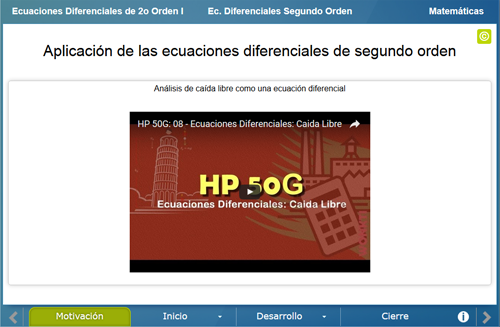
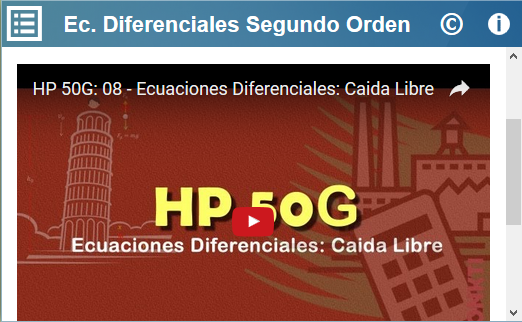
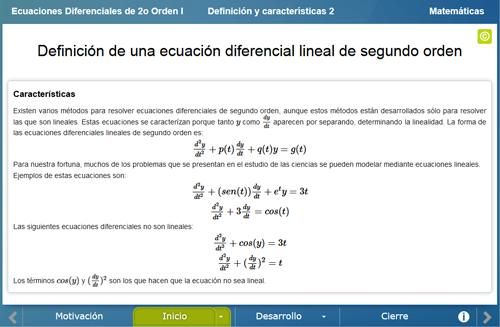
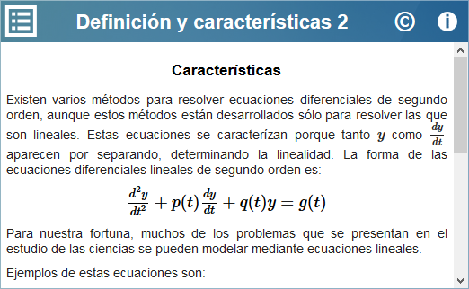
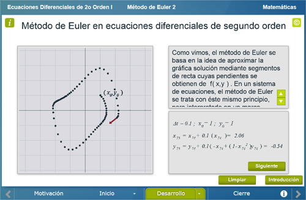
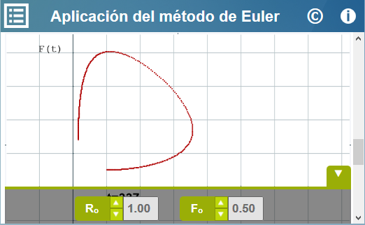
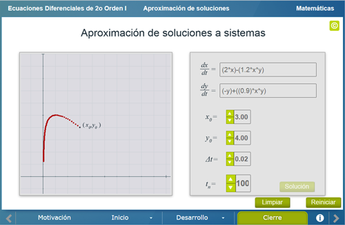
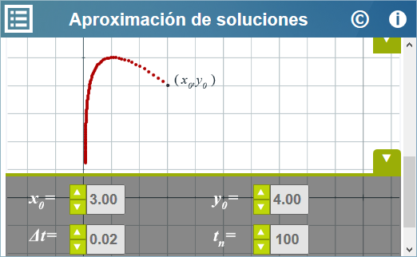

Ecuaciones Diferenciales de segundo orden I
Ecuaciones Diferenciales de segundo orden I
 Ecuaciones Diferenciales de segundo orden I
Ecuaciones Diferenciales de segundo orden I
Licenciatura: Matemáticas
Materia: Ecuaciones Diferenciales II
Unidad: 1 Sistemas de ecuaciones lineales 1.3 Plano fase.
Competencia específica: Que el usuario conozca cómo utilizar el método de Euler para aproximar soluciones a un sistema de dos ecuaciones de primer orden extraídas de una ecuación de segundo orden.
Se modelará una ecuación de segundo orden que representa un fenómeno físico, a continuación se analizará el plano fase a través del método de Euler.
Se muestra un video en el cual se describe la caida libre de un cuerpo y a continuación se muestra como se modela este fenómeno a través de una ecuación diferencial de segundo orden.


Se muestran diversos ejemplos en los cuales se analiza a detalle cómo es la estructura de las ecuaciones diferenciales de segundo orden, y cómo estas se pueden transformar a un sistema de ecuaciones.


En este apartado se muestra la idea básica de la aproximación a una ecuación diferencial por el método de Euler, se inicia analizando este método en una ecuación de primer orden, a continuación se analiza el método en una ecuación de segundo orden y finalmente se aplica el método a un sistema que se presenta en la vida cotidiana.


Se muestra una escena en la cual el usuario puede escribir las ecuaciones de un sistema, podrá elegir las condiciones iniciales así como los parámetros requeridos para el método de Euler para finalmente obtener una aproximación gráfica a la solución del sistema que se escribió.


| Diseño del contenido | Víctor Hugo García Jarillo (Facultad de Ciencias UNAM, LITE) |
| Diseño funcional | Víctor Hugo García Jarillo (Facultad de Ciencias UNAM, LITE) |
| Programación | Víctor Hugo García Jarillo (Facultad de Ciencias UNAM, LITE) |
| Diseño gráfico | Ricardo López Gómez |
| Coordinación | Leticia Montserrat Vargas Rocha |
| Diseño funcional | Victor Hugo García Jarillo (Facultad de Ciencias, UNAM) |
| Programación | Victor Hugo García Jarillo (Facultad de Ciencias, UNAM) |
| Diseño gráfico | Francisco Varela Fuentes |
| Coordinación | Leticia Montserrat Vargas Rocha |
| Desarrollo del contenedor | Oscar Escamilla González |
Los contenidos de esta unidad didáctica interactiva están bajo una licencia Creative Commons Reconocimiento-NoComercial-CompartirIgual.
La unidad didáctica fue creada con Arquímedes, una herramienta de código abierto.
La unidad didáctica contiene escenas elaboradas con Descartes, una herramienta de código abierto.
LITE - UnADM 2014